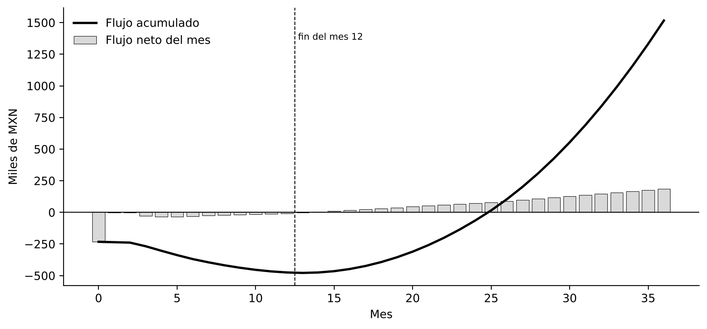

Semana 7 — Viabilidad técnica y económica
Objetivo de la semana
Responder la pregunta que más equipos evitan: ¿el negocio cierra? La pertinencia se respondió en las semanas 2 a 4 y la factibilidad en la 5 y la 6. Esta semana mide la viabilidad: cuánto cuesta realmente fabricar Nervik, cuánto cuesta la IA, a qué precio vender, cuántas unidades hacen falta para el punto de equilibrio y si el VPN es positivo. Todo se construyó en una hoja de cálculo con fórmulas visibles.
Bloque 1 — Pertinencia, factibilidad y viabilidad
- Económica: se analiza en los bloques siguientes.
- Operativa: con PCBA de JLCPCB y un fixture de prueba, el ensamble es de unos 15 min por unidad; manejable para 100 unidades al año.
- Legal: el dispositivo no emite interferencia ni actúa sobre el vehículo; requiere un módem homologado por el IFT, cumplir la ley de protección de datos personales y, si el registro se usará como evidencia, criterios compatibles con la NOM-151.
Bloque 2 — Modelo de ingresos
Prompt (Perplexity) → Benchmarking de modelos de ingresos
Se pidió investigar tres empresas con oferta similar: quién paga, cuándo, rango de precio, fricción y otros pagadores posibles.
| Empresa | Modelo de ingresos | Precio | Fricción / otros pagadores |
|---|---|---|---|
| Motive | Suscripción por vehículo al mes, hardware incluido, contrato anual | ≈ US$35/mes | Precio oculto, contrato de 12 meses / aseguradoras, brokers |
| Geotab | Hardware vendido o prestado + SaaS; contratos de 3 años | US$80–120 + US$30–40/mes | Configuración compleja / integradores |
| Detecta Security (custodia) | Por servicio o ruta | $8,000–45,000 por ruta | Costo por viaje / la aseguradora puede exigirla |
Modelo predominante: hardware + suscripción por vehículo al mes. Stakeholder no cobrado: la aseguradora de carga.
Modelo elegido para Nervik
Hardware a $1,800 instalado + suscripción de $300 al mes (app, conectividad, expedientes y reporte para la aseguradora). Desafío de diseño: el expediente firmado solo existe dentro de la suscripción, para que su valor sea visible.
Bloque 3 — Costos
BOM cotizado
Se cotizó la arquitectura del PDS, no la del BOM preliminar, en fuentes reales, el 30 de octubre de 2026, con un tipo de cambio de $18.65 (FIX de Banxico del 27 de octubre).
| Componente | Especificación | USD a 100 u | Fuente | Estado |
|---|---|---|---|---|
| Microcontrolador | RP2040, Cortex-M0+ a 133 MHz, 264 kB | 0.76 | LCSC C2040 | ✅ |
| Controlador CAN | MCP2515 | 1.05 | LCSC C12368 | ✅ |
| Transceptor CAN aislado | ISO1042 | 1.60 | LCSC C2672259 | ✅ |
| IMU | LSM6DSOX ±16 g | 1.66 | LCSC C481766 | ✅ |
| Módem | Quectel BG95-M3 (LTE-M/NB + 2G) | 19.91 | Mouser vía Findchips | ✅ |
| GNSS | Quectel LC76G | 5.48 | Avnet | ✅ |
| Cable J1939 | Y Deutsch de 9 pines | 7.68 | Alibaba (MOQ 100) | ✅ |
| SIM IoT | 1NCE, 10 años, 500 MB | 16.00 | Lista de precios 1NCE (oct. 2026) | ✅ |
| Resto | Flash, energía, batería, LED, pasivos, antenas | ≈ 9.98 | LCSC / proveedores | 🟡 Estimado |
MXN por unidad a 100 unidades — total $2,095
- Componentes: $754 a 100 piezas. Excede en $104 el requisito C-01 del PDS; el módem es el 49% del costo.
- Costo unitario del hardware: $2,095 a 100 unidades y $2,662 a 10 unidades.
- Riesgo: el BG95-M3 tiene hasta 16 semanas de entrega de fábrica, contra el límite de 8 semanas del requisito C-05.
Costos D/F/S
Se llenó la plantilla del profesor (CREAR / DISTRIBUIR). Los D son pocos y conectados con la propuesta: el modelo TinyML, el sensado multiseñal y la bitácora firmada. El módem, que es el mayor costo, es F: la palanca está ahí sin tocar el diferencial. Son S la PCB, la nube, la tarifa de IA, el cable y la SIM.
Costo de la IA
Se escribió el prompt real del producto (rol del sistema, telemetría en JSON, eventos del modelo, historial del tramo, verificación HMAC; 2,168 caracteres) y se estimaron sus tokens: unos 900 de entrada y 600 de salida. Precio de Claude Haiku 5.5: US$0.10 por millón de tokens de entrada y US$0.50 por millón de salida.
Fórmula
1.34 llamadas/día × (900 × 0.10 + 600 × 0.50) / 10⁶ × 30 = US$0.0157 al mes, es decir $0.29 MXN por unidad. Con 100 usuarios son $29 al mes; la IA es el 0.1% de la suscripción. La decisión de la Semana 5 (edge) fue también la decisión económica correcta.
Ciclos de aprendizaje
Un ciclo cuesta $25,958 directos, $29,851 con 15% de indirectos. Con 30% de contingencia:
| Escenario | Ciclos | Costo total |
|---|---|---|
| Mínimo | 3 | $116,420 |
| Promedio (presupuestado) | 6 | $232,840 |
| Máximo | 8 | $310,454 |
Bloque 4 — Ejercicios 4 a 9
| Ejercicio | Planteamiento | Resultado | Decisión |
|---|---|---|---|
| 4 | $250,000; $60,000 × 6 años; 11% | Factor 4.2305 → VPN +$3,832 | Aceptar (por poco) |
| 5 | $50,000; flujos de 7.5k, 12k, 20k y 25k; 4% | VPN +$7,456 | Viable |
| 6 | $1,000,000; flujos de 300k, 350k, 375k y 300k + 150k de salvamento; 10% | VPN +$151,083 | Viable |
| 7 | X frente a Y, $50,000, 8% | X +$14,427 · Y +$12,128 | Se prefiere X |
| 8 | Sensibilidad de X | ver gráfica | Cambia entre 20% y 25% (TIR ≈ 23.4%) |
| 9 | Global Solutions, r₁ = 14%, r₂ = 22% | VPN₁ +40,686 · VPN₂ −36,714 → TIR ≈ 18.2% | Viable (> 14%) |
Sensibilidad del proyecto X (ejercicio 8)
El VPN cruza cero entre 20% y 25% — TIR aproximada de 23.4%.
Bloque 5 — Modelo económico
Prompt (Claude) → Modelo económico
Se entregaron el producto, la propuesta de valor, el modelo de ingresos, el BOM cotizado, el costo de la IA, la nube y el volumen objetivo, y se pidieron los 5 pasos del formato: costo unitario, precio (cost-plus y value-based), punto de equilibrio, flujo a 12 meses y VPN al 15%.
| Concepto | Resultado |
|---|---|
| Costo unitario | $2,662 (10 u) · $2,095 (100 u) |
| Cost-plus (40%) | $2,934 de hardware · piso de suscripción de $83 al mes |
| Value-based | Techo de $454 al mes si la aseguradora evita 1 custodia al año por unidad; $37 al mes sin ese supuesto |
| Precio recomendado | $1,800 + $300 al mes |
| Punto de equilibrio | 154 unidades-año; 123 suscripciones activas para cubrir la operación |
| Flujo a 12 meses | Ningún mes positivo; acumulado mínimo de −$475,271 |
| VPN a 12 meses (15%) | −$458,058 → inviable a 12 meses |
| VPN a 36 meses | +$962,058; flujo positivo desde el mes 14; recuperación en el mes 25 |

Alertas
El BOM incumple C-01; el precio de $300 depende de que la aseguradora reconozca la evidencia (hipótesis H3); hacen falta unos $480,000 de financiamiento antes del mes 14.
Palancas
Cobrar a la aseguradora o al broker por unidad equipada; usar el GNSS integrado del BG95 (−$102 por unidad); dos flotas ancla con suscripción prepagada.
Conclusión de la semana
Los números confirmaron dos cosas incómodas y útiles: Nervik no cierra en un año, porque es un negocio de suscripción que se paga en tres, y su precio depende menos del costo que de una sola hipótesis de mercado (que la aseguradora acepte la evidencia y evite custodias). La IA, que parecía el riesgo de costo, resultó irrelevante gracias a la arquitectura en el borde; el verdadero costo está en el módem celular. La entrevista con un broker o suscriptor de seguros es ahora la tarea más importante del proyecto.